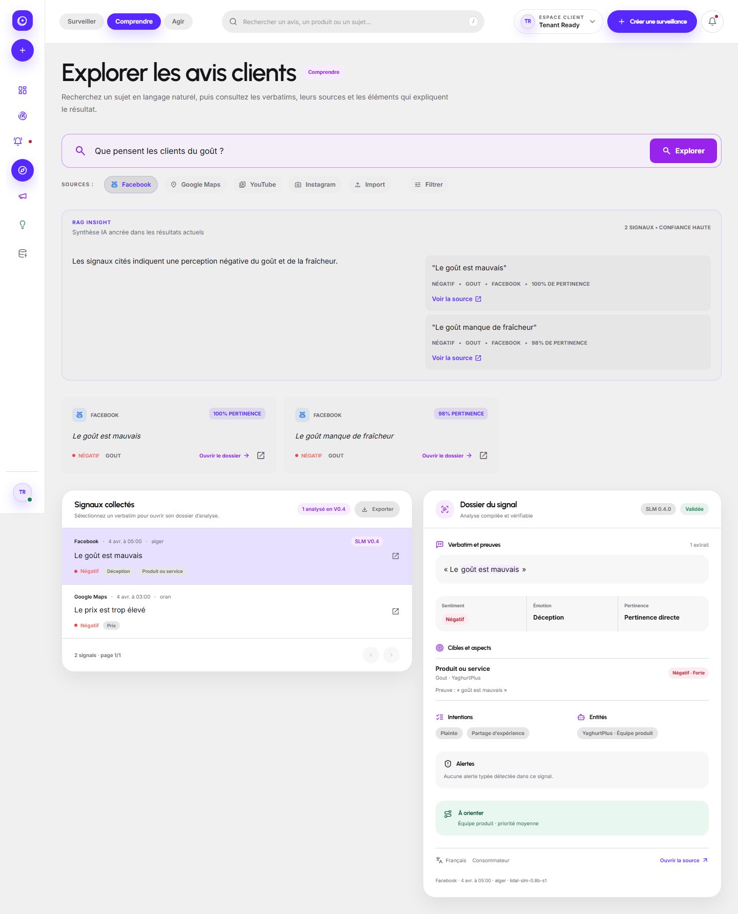
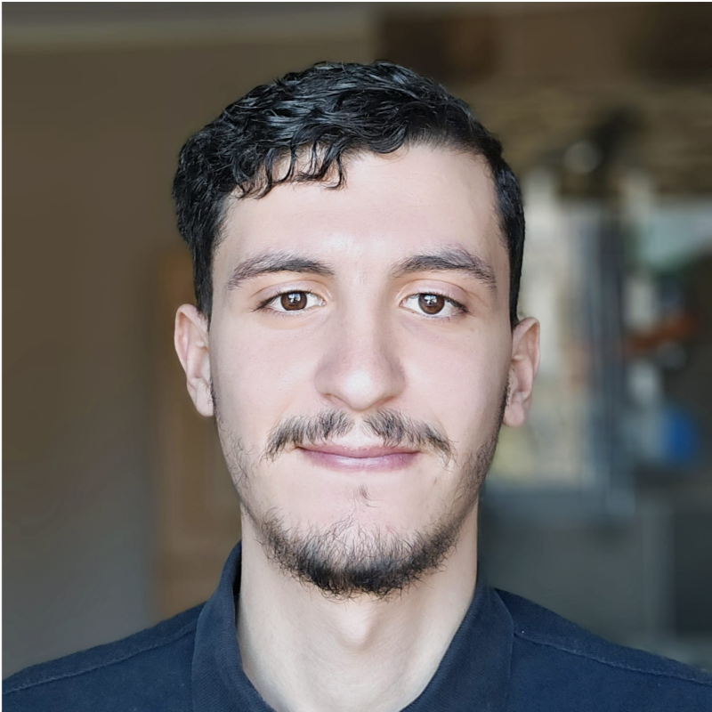
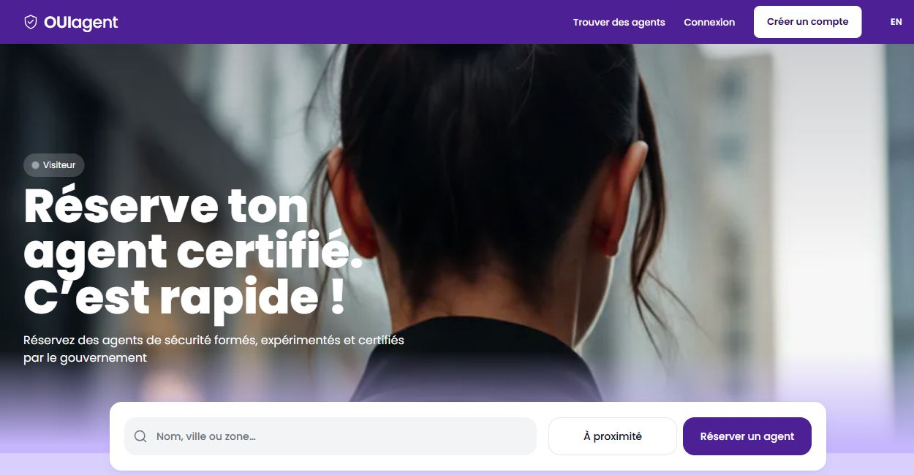
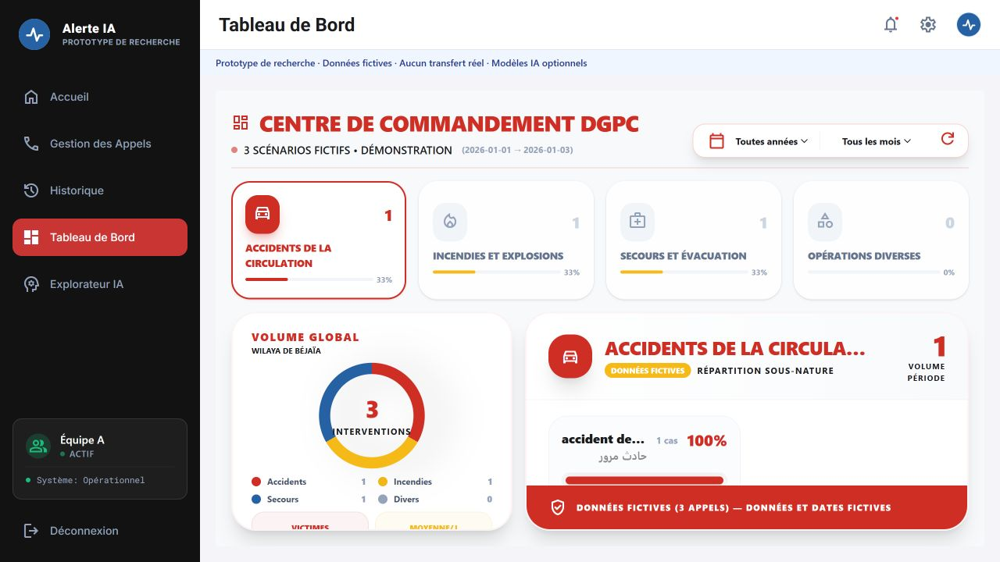
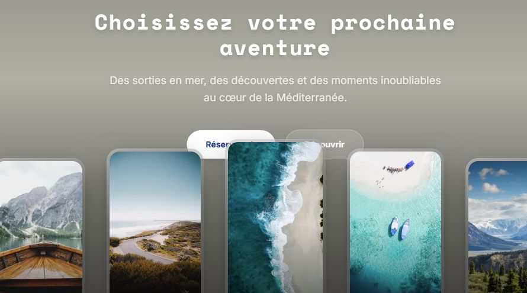
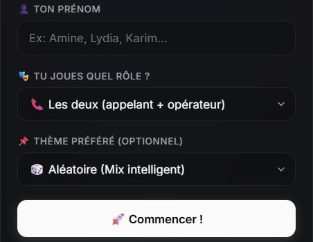
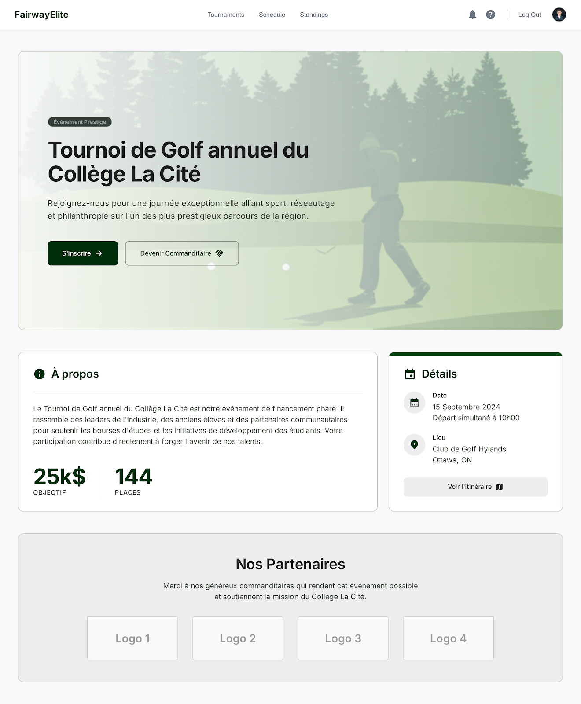

LIDAL Pulse
A collaborative marketing intelligence application. I connect Python/FastAPI services with React/TypeScript interfaces, multilingual NLP workflows and language models.

I build web applications and backend APIs with Python, C# and TypeScript.
Based in Canada
I’m Rayan, a software developer based in Canada. I work with Python, C# and TypeScript to build web applications, backend APIs and tools that connect data with everyday workflows.
My recent work includes LIDAL Pulse, a marketing intelligence application, and OuiAgent, a bilingual security marketplace. I also contribute to Alerte IA, a research prototype for emergency-call transcription and incident information. In these collaborative projects, my role is software development.
I earned my Computer Programming diploma at La Cité after two years of preparatory studies at ESTIN in Béjaïa. I’m interested in backend, full-stack and applied AI development roles in Canada.

A collaborative marketing intelligence application. I connect Python/FastAPI services with React/TypeScript interfaces, multilingual NLP workflows and language models.

A bilingual marketplace for clients and independent security agents. I contribute to the Next.js application, including agent discovery, booking and account workflows.

A collaborative emergency-call research prototype. I develop collection and annotation tools, integrate models, and contribute to the operator interface for transcription and structured incident information.
Public research prototype · Fictional demo data

A collaborative travel and booking platform with client, partner and admin interfaces. My contributions include authentication routes and fixes to partner booking rendering.

Browser-based audio collection connected to Drive and Sheets. I work on browser recording and collection workflows using HTML, CSS, JavaScript and Apps Script.

A team ASP.NET Core MVC application. My contributions include interface improvements, database query fixes, integration tests and PostgreSQL deployment adjustments.
Backend
Frontend
Data
Quality
Applied AI
2024–2026
Computer Programming
Ontario College Diploma · Earned
2021–2023
Integrated Preparatory Cycle
Two years · Mathematics and Computer Science
For opportunities in backend, full-stack or applied AI development, you can reach me by email or on LinkedIn.
rayantrk06@gmail.comConnect on LinkedIn